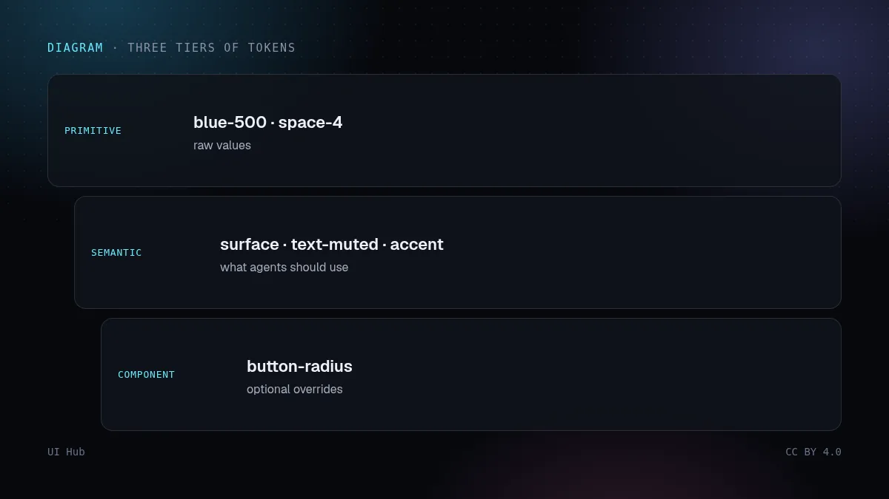
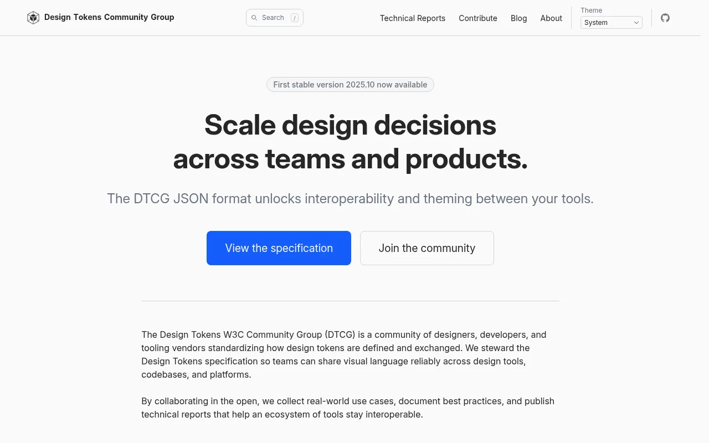
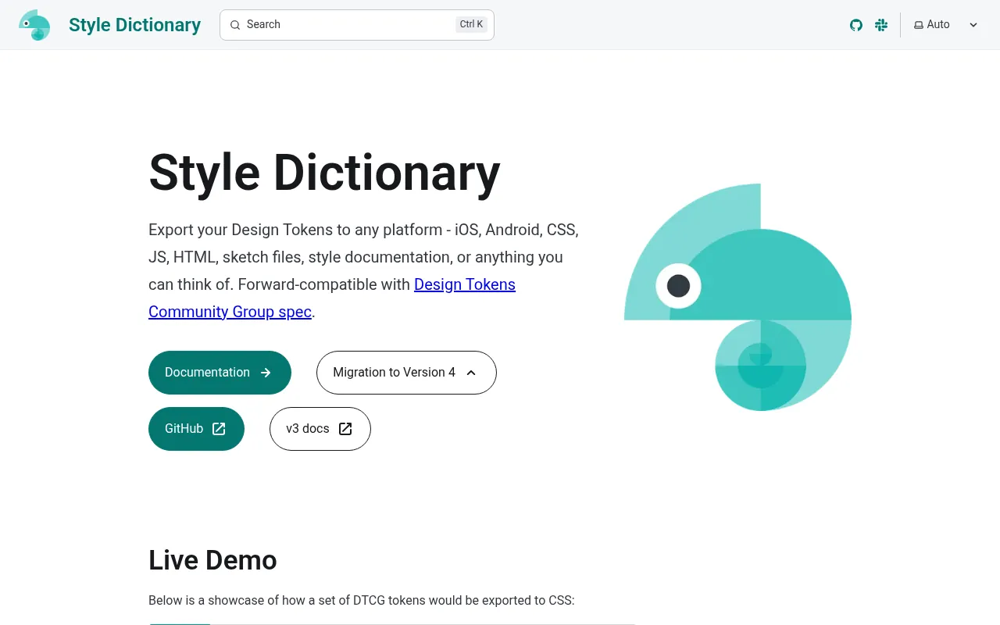

智能体遵循具体数值远比遵循描述可靠。设计 Token 文件把「干净、高级、带点俏皮」变成智能体能处处套用的数字。W3C 设计 Token 社区组（DTCG）为此发布了一种与厂商无关的 JSON 格式，Style Dictionary、Tokens Studio 等工具都支持。

{
"color": { "accent": { "$type": "color", "$value": "oklch(62% 0.17 250)" } },
"radius": { "md": { "$type": "dimension", "$value": "10px" } },
"space": { "4": { "$type": "dimension", "$value": "16px" } }
}
blue-500、space-4）。surface、text-muted、accent、danger）。智能体应主要用这一层。button-radius）。
本站百科里的颜色、间距、字体规范摘要，就是按能直接贴进这类用法说明的格式写的。